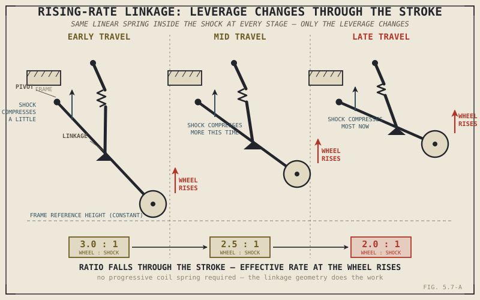

A shock absorber with a perfectly ordinary, linear spring inside it can still deliver a progressive, ramping-up effective rate at the wheel — no special progressive spring required. The trick isn't in the spring at all. It's in the mechanical linkage between the shock and the swingarm, and understanding it is the payoff this chapter has been building toward since Chapter 5.2 first introduced linear and progressive springs as a straightforward either-or choice.
Chapter 5.6 covered how the front suspension is built. This chapter covers the rear, and rear suspension design has taken a genuinely different path from the front over the decades.
Twin-Shock and Mono-Shock
Older and some deliberately classic-styled motorcycles use twin-shock rear suspension: two separate shock absorbers, one on each side of the rear wheel, connecting the swingarm directly to the frame in a simple, symmetric arrangement. It's mechanically straightforward, easy to service, and remains a legitimate choice wherever simplicity, cost, or classic styling matter more than outright performance.
Most modern performance-oriented motorcycles instead use a mono-shock: a single, central shock absorber, typically mounted along the bike's centreline, acting on the swingarm through a system of linkage arms rather than a direct connection. That linkage is where this chapter's real substance lives.
Rising-Rate Linkage: Manufacturing Progression Without a Progressive Spring
A rising-rate linkage connects the swingarm to the shock through a series of pivoting arms whose geometry changes the mechanical leverage between wheel movement and shock compression as the suspension moves through its stroke. Early in the travel, a given amount of wheel movement compresses the shock relatively little; deeper in the stroke, that same amount of wheel movement compresses the shock progressively more. The shock's own internal spring can be, and often is, a perfectly ordinary linear spring, exactly as Chapter 5.2 described — but the changing leverage of the linkage means the effective spring rate felt at the wheel rises through the stroke anyway, soft and compliant early on, firmer and more resistant to bottoming out later, without needing the physically variable coil spacing a progressive spring requires.
A rising-rate linkage gets a progressive result from a linear spring by changing the lever arm, not the spring. Chapter 5.2 asked you to choose between a linear spring and a progressive one — a well-designed linkage answers that it doesn't have to be the spring's job at all.

A swingarm connected to a mono-shock through a rising-rate linkage, shown at three points in its travel, with the changing leverage ratio between wheel movement and shock compression labeled at each stage.
Why Mono-Shock Systems Became the Standard
Beyond the rate-tuning flexibility linkage geometry provides, a mono-shock system concentrates the engineering budget into a single, more sophisticated unit rather than splitting it across two simpler ones — echoing the same quality difference Chapter 5.6 described between damping rod and cartridge forks, but at the level of the whole shock rather than its internals. A single, well-engineered shock can justify more advanced damping hardware than two shocks sharing the same total cost typically could. Mono-shock placement, usually closer to the bike's centre of mass than two shocks mounted out at the sides, also supports the mass centralization Part VIII will eventually treat in full physical detail.
None of this makes linkage-based mono-shock systems an unconditional upgrade. The added pivot points, bearings, and bushings in a linkage system introduce more mechanical complexity, more components that wear over time, and more to service than a simple twin-shock's direct connection — a genuine cost, not an oversight, and exactly why twin-shock rear ends remain a sensible, deliberate choice on motorcycles where simplicity and low maintenance matter more than a precisely tuned rising rate.
A Common Misconception, Cleared Up Early
It's easy to assume mono-shock is simply the modern, correct answer and twin-shock a dated technology waiting to be phased out entirely. The rate-tuning and mass-centralization advantages described above are genuine, but so is the added mechanical complexity and maintenance a linkage system introduces — and a twin-shock rear end, done well, remains a perfectly legitimate engineering choice for a motorcycle whose priorities are cost, simplicity, and easy long-term maintenance rather than a precisely engineered rising rate.
Where This Leads
Fork and shock construction are now both covered. What hasn't been addressed is how a rider or mechanic actually adjusts the compression and rebound damping Chapter 5.3 introduced on these real, physical components. Chapter 5.8 covers that directly.
Key Concepts to Remember
- Twin-shock rear suspension uses two shocks connecting the swingarm directly to the frame; mono-shock uses a single central shock, usually acting through a linkage rather than a direct connection.
- A rising-rate linkage changes the mechanical leverage between wheel movement and shock compression throughout the stroke, producing a progressive effective rate at the wheel even from an ordinary linear spring inside the shock.
- Mono-shock systems concentrate engineering quality into one unit and support better mass centralization, but introduce more pivot points, bearings, and maintenance than a simpler twin-shock arrangement.
- Twin-shock rear ends remain a legitimate, deliberate choice for cost, simplicity, and low maintenance — not an outdated design mono-shock has universally replaced.
Cross-References
| ← Ch. 5.2 | Introduced linear and progressive springs as a straightforward choice; this chapter shows how linkage geometry can produce a progressive result from a linear spring without that choice being necessary. |
| ← Ch. 5.6 | Described the quality difference between damping rod and cartridge forks; this chapter applies the same concentrated-engineering-quality logic to mono-shock versus twin-shock systems. |
| → Pt. VIII | Will cover mass centralization in full physical detail, building on the shock placement advantage introduced here. (Not yet published.) |
| → Ch. 5.8 | Covers compression and rebound adjustment, the practical controls found on the fork and shock hardware this and the previous chapter described. |